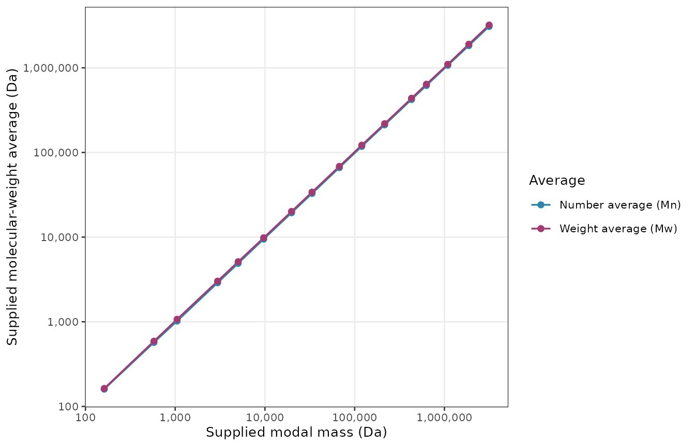
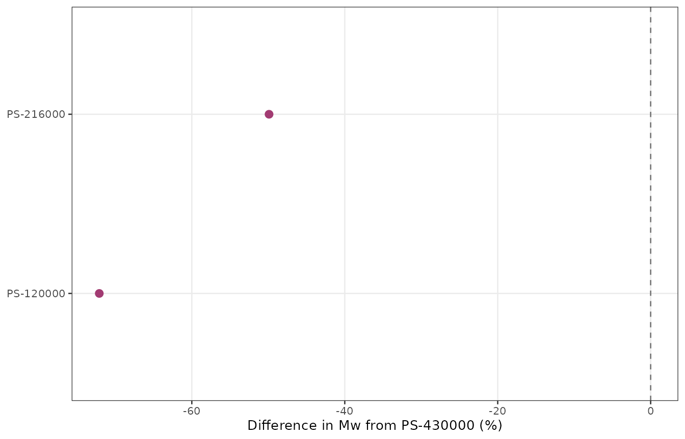
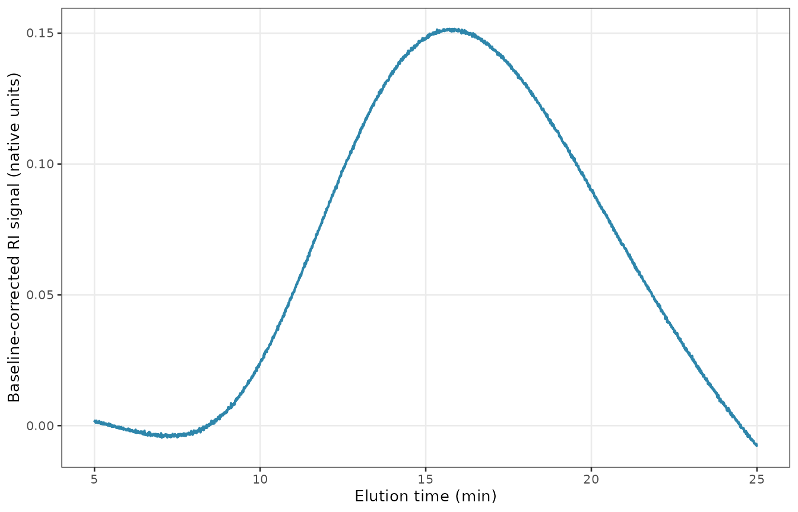

Scope
This vignette shows summary and slice tables, a comparison result,
and a local CSV export. The summary examples use the package’s supplied
polystyrene standard table. The chromatogram example uses a synthetic
sec_triple_detect trace. These examples demonstrate the
export functions; they do not validate a calibration or a method.
The CSV files created during rendering are written to
tempdir(). Report, Excel, database, and Arrow examples
later in the vignette remain unevaluated; they are templates that
require local paths or optional software.
Setup
library(measure)
#> Loading required package: recipes
#> Loading required package: dplyr
#>
#> Attaching package: 'dplyr'
#> The following objects are masked from 'package:stats':
#>
#> filter, lag
#> The following objects are masked from 'package:base':
#>
#> intersect, setdiff, setequal, union
#>
#> Attaching package: 'recipes'
#> The following object is masked from 'package:stats':
#>
#> step
library(measure.sec)
library(recipes)
library(dplyr)
library(ggplot2)
library(tidyr)Summary table
measure_sec_summary_table() collects molecular-weight
averages and any additional columns requested. Here it formats the
values supplied with sec_ps_standards and carries the modal
mass (mp) as an additional column.
data(sec_ps_standards, package = "measure.sec")
summary_input <- sec_ps_standards |>
transmute(
sample_id = standard_name,
mp_da = mp,
mw_mn = mn,
mw_mw = mw,
mw_dispersity = dispersity
)
summary_tbl <- measure_sec_summary_table(
summary_input,
sample_id = "sample_id",
additional_cols = "mp_da",
digits = 2
)
print(summary_tbl)
#> SEC Analysis Summary
#> ============================================================
#> Samples: 16
#>
#> # A tibble: 16 × 5
#> sample_id mw_mn mw_mw mw_dispersity mp_da
#> <chr> <dbl> <dbl> <dbl> <dbl>
#> 1 PS-3150000 3080000 3200000 1.04 3150000
#> 2 PS-1870000 1830000 1900000 1.04 1870000
#> 3 PS-1090000 1070000 1100000 1.03 1090000
#> 4 PS-630000 618000 640000 1.04 630000
#> 5 PS-430000 422000 437000 1.04 430000
#> 6 PS-216000 212000 219000 1.03 216000
#> 7 PS-120000 118000 122000 1.03 120000
#> 8 PS-67500 66200 68500 1.03 67500
#> 9 PS-33500 32800 34000 1.04 33500
#> 10 PS-19800 19400 20100 1.04 19800
#> 11 PS-9680 9470 9820 1.04 9680
#> 12 PS-5030 4900 5120 1.04 5030
#> 13 PS-2970 2890 3020 1.05 2970
#> 14 PS-1050 1020 1070 1.05 1050
#> 15 PS-580 570 590 1.04 580
#> 16 PS-162 160 163 1.02 162The figure uses the averages in the supplied standard table. It is a view of the package data, not an analysis of a newly measured chromatogram.
summary_plot_data <- summary_tbl |>
as_tibble() |>
pivot_longer(
cols = c(mw_mn, mw_mw),
names_to = "average",
values_to = "molecular_weight"
) |>
mutate(
average = recode(
average,
mw_mn = "Number average (Mn)",
mw_mw = "Weight average (Mw)"
)
)
ggplot(
summary_plot_data,
aes(x = mp_da, y = molecular_weight, colour = average, group = average)
) +
geom_line(linewidth = 0.6) +
geom_point(size = 1.8) +
scale_x_log10(labels = scales::label_comma()) +
scale_y_log10(labels = scales::label_comma()) +
scale_colour_manual(
values = c(
"Number average (Mn)" = "#2E86AB",
"Weight average (Mw)" = "#A23B72"
)
) +
labs(
x = "Supplied modal mass (Da)",
y = "Supplied molecular-weight average (Da)",
colour = "Average"
) +
theme_measure_sec()
Molecular-weight averages from the supplied standard table, returned by
measure_sec_summary_table() and plotted against each
standard’s supplied modal mass.
Comparing standards
measure_sec_compare() returns a summary and differences
from a selected reference. This example compares three rows from the
same supplied standard table; it does not represent batch release
results.
comparison_rows <- summary_tbl |>
as_tibble() |>
filter(sample_id %in% c("PS-430000", "PS-216000", "PS-120000"))
comparison <- measure_sec_compare(
comparison_rows |> filter(sample_id == "PS-430000"),
comparison_rows |> filter(sample_id == "PS-216000"),
comparison_rows |> filter(sample_id == "PS-120000"),
samples = c("PS-430000", "PS-216000", "PS-120000"),
metrics = "mw_averages",
plot = FALSE,
reference = "PS-430000"
)
comparison$summary
#> # A tibble: 3 × 4
#> sample mw_mn mw_mw mw_dispersity
#> <chr> <dbl> <dbl> <dbl>
#> 1 PS-430000 422000 437000 1.04
#> 2 PS-216000 212000 219000 1.03
#> 3 PS-120000 118000 122000 1.03
comparison$differences
#> # A tibble: 3 × 7
#> sample mw_mn_diff mw_mn_pct mw_mw_diff mw_mw_pct mw_dispersity_diff
#> <chr> <dbl> <dbl> <dbl> <dbl> <dbl>
#> 1 PS-430000 0 0 0 0 0
#> 2 PS-216000 -210000 -49.8 -218000 -49.9 -0.01
#> 3 PS-120000 -304000 -72 -315000 -72.1 -0.01
#> # ℹ 1 more variable: mw_dispersity_pct <dbl>
comparison_plot_data <- comparison$differences |>
filter(sample != "PS-430000")
ggplot(
comparison_plot_data,
aes(x = mw_mw_pct, y = sample)
) +
geom_vline(xintercept = 0, colour = "grey45", linetype = "dashed") +
geom_point(colour = "#A23B72", size = 2.4) +
labs(
x = "Difference in Mw from PS-430000 (%)",
y = NULL
) +
theme_measure_sec()
Percent differences in supplied weight-average molecular weight from the
PS-430000 reference, using the differences table returned
by measure_sec_compare().
Slice table from a chromatogram
Long format is convenient for plotting and interchange. This example converts a single synthetic PS-100K chromatogram to the measure format, corrects its RI baseline, and extracts slice values.
data(sec_triple_detect, package = "measure.sec")
ps_sample <- sec_triple_detect |>
filter(sample_id == "PS-100K")
rec <- recipe(
ri_signal + elution_time ~ sample_id,
data = ps_sample
) |>
update_role(sample_id, new_role = "id") |>
step_measure_input_long(
ri_signal,
location = vars(elution_time),
col_name = "ri"
) |>
step_sec_baseline(measures = "ri")
chromatogram_data <- prep(rec) |>
bake(new_data = NULL)
slices_long <- measure_sec_slice_table(
chromatogram_data,
measures = "ri",
sample_id = "sample_id"
)
head(slices_long, 10)
#> # A tibble: 10 × 5
#> sample_id slice location measure value
#> <chr> <int> <dbl> <chr> <dbl>
#> 1 PS-100K 1 5 ri 0.00132
#> 2 PS-100K 2 5.01 ri 0.00189
#> 3 PS-100K 3 5.02 ri 0.00156
#> 4 PS-100K 4 5.03 ri 0.00123
#> 5 PS-100K 5 5.04 ri 0.00157
#> 6 PS-100K 6 5.05 ri 0.00116
#> 7 PS-100K 7 5.06 ri 0.00188
#> 8 PS-100K 8 5.07 ri 0.00110
#> 9 PS-100K 9 5.08 ri 0.00135
#> 10 PS-100K 10 5.09 ri 0.00126
ggplot(slices_long, aes(x = location, y = value)) +
geom_line(colour = "#2E86AB", linewidth = 0.7) +
labs(
x = "Elution time (min)",
y = "Baseline-corrected RI signal (native units)"
) +
theme_measure_sec()
The baseline-corrected RI slice table for the synthetic PS-100K example, plotted against its stored elution-time locations.
Wide slice tables
Wide format gives each measure its own column. It can be useful when exporting several aligned measures from the same baked recipe.
slices_wide <- measure_sec_slice_table(
chromatogram_data,
measures = "ri",
sample_id = "sample_id",
pivot = TRUE
)
head(slices_wide)
#> # A tibble: 6 × 4
#> sample_id slice location ri
#> <chr> <int> <dbl> <dbl>
#> 1 PS-100K 1 5 0.00132
#> 2 PS-100K 2 5.01 0.00189
#> 3 PS-100K 3 5.02 0.00156
#> 4 PS-100K 4 5.03 0.00123
#> 5 PS-100K 5 5.04 0.00157
#> 6 PS-100K 6 5.05 0.00116Write CSV files to a temporary directory
These two files are written to the current R session’s temporary directory. They are not saved in the package or vignette source tree.
export_dir <- tempdir()
summary_csv <- file.path(export_dir, "sec_summary_table.csv")
slices_csv <- file.path(export_dir, "sec_slice_data.csv")
utils::write.csv(as.data.frame(summary_tbl), summary_csv, row.names = FALSE)
utils::write.csv(slices_long, slices_csv, row.names = FALSE)
tibble::tibble(
file = basename(c(summary_csv, slices_csv)),
bytes = file.info(c(summary_csv, slices_csv))$size
)
#> # A tibble: 2 × 2
#> file bytes
#> <chr> <dbl>
#> 1 sec_summary_table.csv 604
#> 2 sec_slice_data.csv 88325Other export targets
The following chunks are not run when this vignette is rendered. They show optional local integrations; set paths and connection details for your own environment before running them.
Excel workbook
# Requires the optional writexl package.
excel_file <- file.path(tempdir(), "sec_results.xlsx")
writexl::write_xlsx(
list(
Summary = as.data.frame(summary_tbl),
`Slice Data` = slices_long
),
excel_file
)Database
# Requires DBI and RSQLite. The example database path is temporary.
db_file <- file.path(tempdir(), "sec_results.sqlite")
con <- DBI::dbConnect(RSQLite::SQLite(), dbname = db_file)
DBI::dbWriteTable(con, "sec_results", as.data.frame(summary_tbl), append = TRUE)
DBI::dbDisconnect(con)GraphPad Prism
prism_data <- slices_long |>
select(location, sample_id, value) |>
pivot_wider(names_from = sample_id, values_from = value)
prism_file <- file.path(tempdir(), "sec_for_prism.csv")
utils::write.csv(prism_data, prism_file, row.names = FALSE)Reports
Report generation can write files and may require Quarto or other
local software. These examples remain unevaluated during rendering; each
output path points to tempdir().
measure_sec_report(
as.data.frame(summary_tbl),
template = "standard",
output_format = "html",
output_file = file.path(tempdir(), "sec_standard_report.html"),
title = "SEC analysis summary",
open = FALSE
)
measure_sec_report(
as.data.frame(summary_tbl),
template = "detailed",
output_format = "pdf",
output_file = file.path(tempdir(), "sec_detailed_report.pdf"),
sample_id = "sample_id",
include_slice_table = TRUE
)A QC report needs peak-level input and criteria from the method. Those objects are not part of the standard-table example.
measure_sec_report(
integration_peak_table,
template = "qc",
output_format = "html",
output_file = file.path(tempdir(), "sec_qc_report.html"),
specs = method_criteria
)Traceability fields
Attach provenance fields from the actual run record. The placeholders below are intentionally empty because no analyst or instrument record is included with the supplied standard table.
summary_with_audit <- as.data.frame(summary_tbl) |>
mutate(
analysis_date = as.Date(NA),
analyst = NA_character_,
instrument = NA_character_,
column = NA_character_,
measure_sec_version = as.character(packageVersion("measure.sec"))
)For reproducibility, store the calibration object and analysis settings used for the actual sample. The path below is temporary; replace the placeholder calibration name with the object or identifier from your run.
Troubleshooting
Missing molecular-weight columns
Check that the input to measure_sec_summary_table()
contains Mn, Mw, Mz, or their
mw_-prefixed names.
names(processed_results)Empty slice table
Confirm that the baked recipe contains measure columns before calling
measure_sec_slice_table().
measure::find_measure_cols(processed_results)See also
- Getting started — basic SEC workflow
- Calibration management — save and reuse calibrations
- System suitability — QC calculations and limits
- SEC analysis reference — function reference
Session info
sessionInfo()
#> R version 4.6.2 (2026-10-29)
#> Platform: x86_64-pc-linux-gnu
#> Running under: Ubuntu 26.04.1 LTS
#>
#> Matrix products: default
#> BLAS: /usr/lib/x86_64-linux-gnu/openblas-pthread/libblas.so.3
#> LAPACK: /usr/lib/x86_64-linux-gnu/openblas-pthread/libopenblasp-r0.3.32.so; LAPACK version 3.12.0
#>
#> locale:
#> [1] LC_CTYPE=C.UTF-8 LC_NUMERIC=C LC_TIME=C.UTF-8
#> [4] LC_COLLATE=C.UTF-8 LC_MONETARY=C.UTF-8 LC_MESSAGES=C.UTF-8
#> [7] LC_PAPER=C.UTF-8 LC_NAME=C LC_ADDRESS=C
#> [10] LC_TELEPHONE=C LC_MEASUREMENT=C.UTF-8 LC_IDENTIFICATION=C
#>
#> time zone: UTC
#> tzcode source: system (glibc)
#>
#> attached base packages:
#> [1] stats graphics grDevices utils datasets methods base
#>
#> other attached packages:
#> [1] tidyr_1.3.2 ggplot2_4.0.4 measure.sec_0.0.0.9000
#> [4] measure_0.0.1.9004 recipes_1.4.0 dplyr_1.2.1
#>
#> loaded via a namespace (and not attached):
#> [1] gtable_0.3.6 xfun_0.62 bslib_0.12.0
#> [4] lattice_0.23-1 vctrs_0.7.3 tools_4.6.2
#> [7] generics_0.1.4 parallel_4.6.2 tibble_3.3.1
#> [10] pkgconfig_2.0.3 Matrix_1.7-6 data.table_1.18.6.1
#> [13] RColorBrewer_1.1-3 S7_0.2.2 desc_1.4.3
#> [16] lifecycle_1.0.5 compiler_4.6.2 farver_2.1.2
#> [19] textshaping_1.0.5 codetools_0.2-20 htmltools_0.5.9
#> [22] class_7.3-24 sass_0.4.10 yaml_2.3.12
#> [25] prodlim_2026.03.11 pillar_1.11.1 pkgdown_2.2.1
#> [28] jquerylib_0.1.4 MASS_7.3-66 cachem_1.1.0
#> [31] gower_1.0.2 rpart_4.1.27 parallelly_1.50.0
#> [34] lava_1.11 tidyselect_1.2.1 digest_0.6.39
#> [37] future_1.82.0 purrr_1.2.2 listenv_1.1.0
#> [40] labeling_0.4.3 splines_4.6.2 fastmap_1.2.0
#> [43] grid_4.6.2 cli_3.6.6 magrittr_2.0.5
#> [46] utf8_1.2.6 survival_3.8-12 future.apply_1.21.0
#> [49] withr_3.0.3 scales_1.4.0 lubridate_1.9.5
#> [52] timechange_0.4.0 rmarkdown_2.32 globals_0.20.0
#> [55] otel_0.3.0 nnet_7.3-21 timeDate_4052.112
#> [58] ragg_1.5.2 evaluate_1.0.5 knitr_1.52
#> [61] hardhat_1.4.3 rlang_1.3.0 Rcpp_1.1.2
#> [64] glue_1.8.1 ipred_0.9-16 jsonlite_2.0.0
#> [67] R6_2.6.1 systemfonts_1.3.3 fs_2.1.0